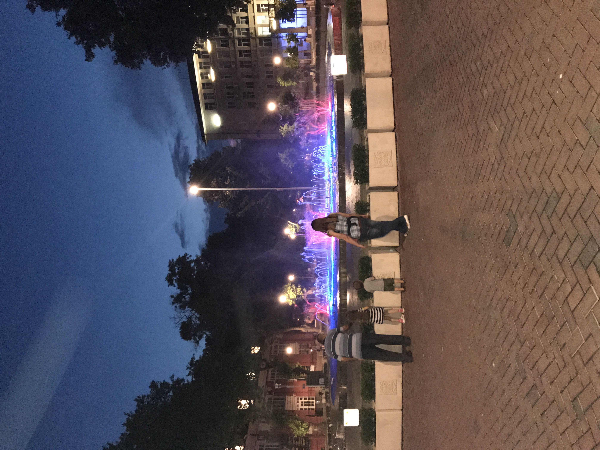
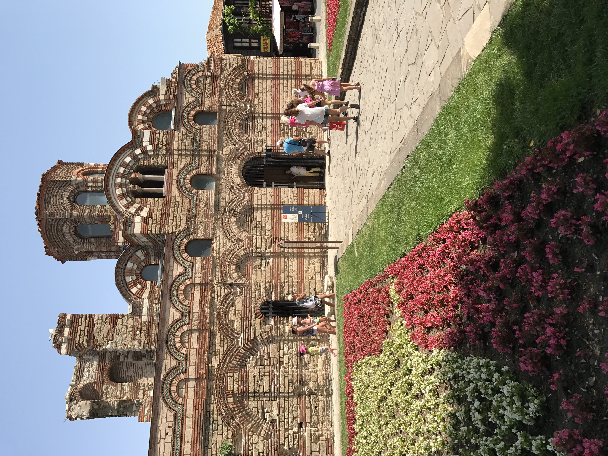
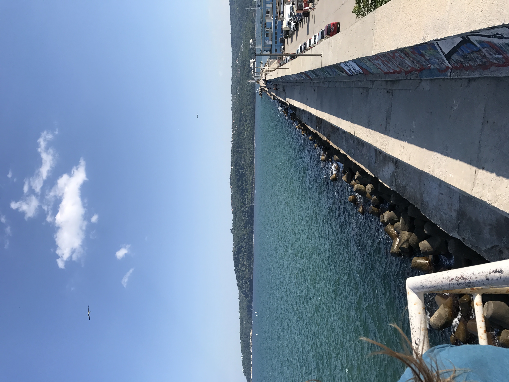

Varna
The city that I explored the most of was Varna. We were able to enjoy many different types of food in this city. Bulgaria has very fresh produce and one of the staples that we ate at many meals was a type of salad called "Shapska". This salad consisted of chopped tomatoes, cucumbers, Bulgarian cheese and olive oil. I enjoyed this salad so much I still make it today!
A fountain in Varna

This was a very elaborate fountain that was lit up at night. This fountain was located in a shopping district near the beach in Varna. Many bulgarians enjoy walking around at night with their family in this part of the city!
Church of St Stephen

This was a very popular tourist atraction found in an old part of the city. You could only access this part of the city by walking because the roads were not built in the times of cars. Inside of the church there were wall paintings from the renaissance era.
Pier on the Black Sea

Bulgaria has access to the Black sea and many people from Russia enjoy visiting the beaches in Bulgaria. This is a picture of a pier that I visted near one of the beaches.